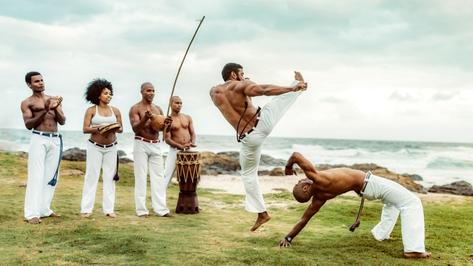

Капоэйра — бразильское национальное боевое искусство, сочетающее в себе элементы танца, акробатики, игры и сопровождающееся национальной бразильской музыкой. Как боевое искусство отличается специфической биомеханикой движений, использованием низких положений, ударов ногами, подсечек и, в некоторых направлениях, обилием акробатики.

Уникальной особенностью капоэйры являются варианты боевой стойки с опорой на три конечности, уклоны прогибом и использование одной или обеих рук в качестве опоры. Другим отличием капоэйры от иных единоборств является отсутствие ринга, ковра, татами или иной соревновательной площадки как таковой.
История капоэйры.
Достоверные сведения о капоэйре начинаются с XVIII века, но, фактически, она зародилась несколько ранее. Согласно общепринятой версии, капоэйра возникла в Южной Америке благодаря чернокожим рабам, которых португальцы привозили из других колоний — Анголы, Мозамбика, Гвинеи, Конго. Вследствие жестокого обращения бразильских рабовладельцев часть рабов бежала в сельву, где африканская религия и культура встретились с индейской. Беглые селились в киломбуш — «вольных городах», из субкультуры которых и начала своё распространение капоэйра.
Техника капоэйра.
Капоэйра – боевое искусство, поэтому его арсенал изобилует разнообразием ударов ногами, руками и головой. Техника богата контратакующими действиями, бросковыми элементами, уклонами и перемещениями. Первое, что бросается в глаза, во время поединка капоэйристов – акробатические движения. К примеру, сальто вперёд или назад бойцы используют для того, чтобы уходить от ударов соперника или во время подготовки собственной атаки. В определённые моменты техника ударов капоэйры во многом схожа с прочими боевыми искусствами: как-никак придумать новые удары сегодня очень сложно, и всё же отличия имеются. Капоэйра в отличие от других ударных техник предполагает удары с опорой на ногу. Удары спортсмены наносят, как правило, в голову или туловище. Что касается защитных действий и уклонов, они в каждой школе имеют свои особенности. Однако мастера-капуэйристы знают, что лучшая защита – постоянное перемещение чередующееся со сменой позиции, что, в конечном счёте, затруднит атаки противника. Причём большая часть перемещений – с опорой на руки. Капоэйра универсальна, так как даёт возможность обеим соперникам в течение нескольких мгновений перейти из защитного положения – в атакующее и наоборот. Немногие боевые искусства так органично используют акробатические движения, как капоэйра, – это украшение происходящего поединка.